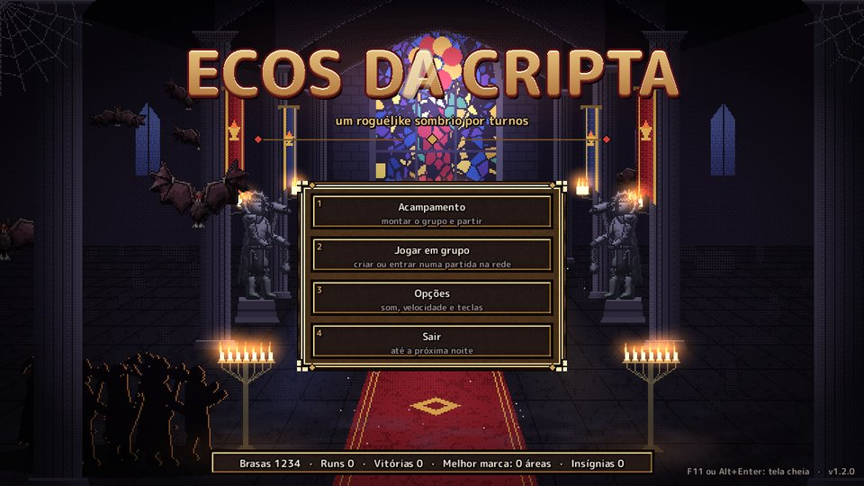
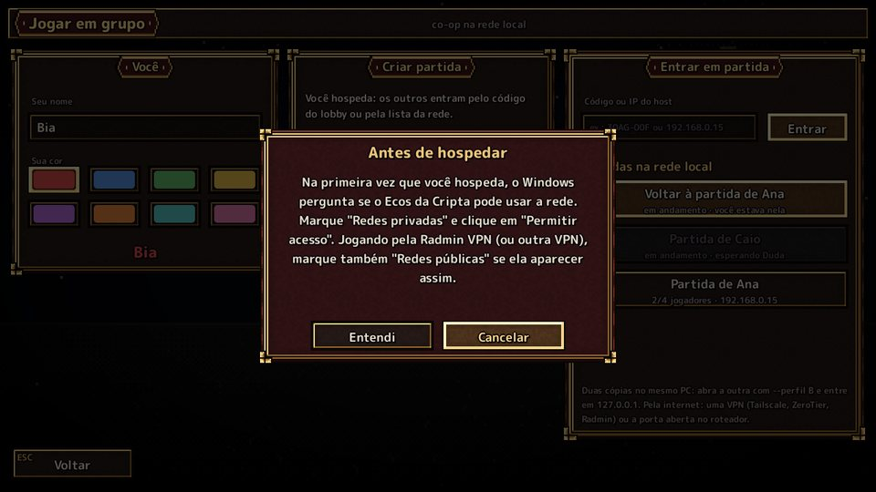
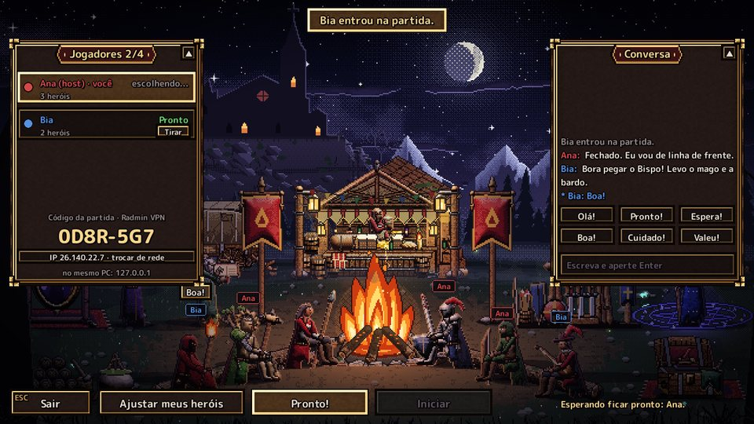
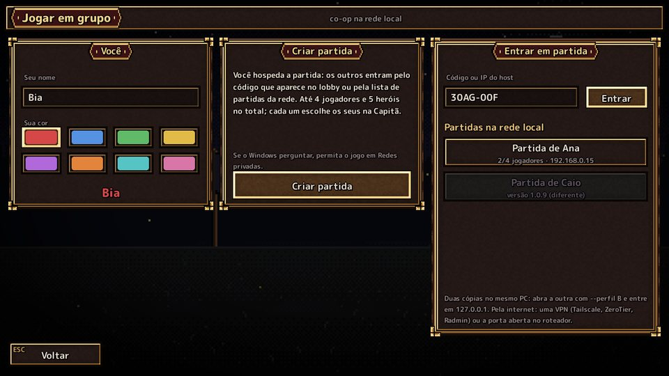
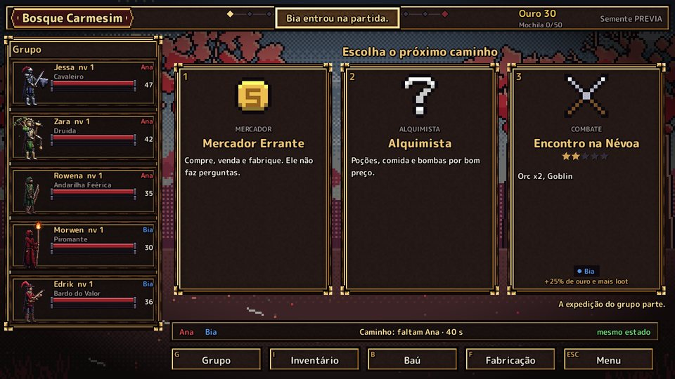
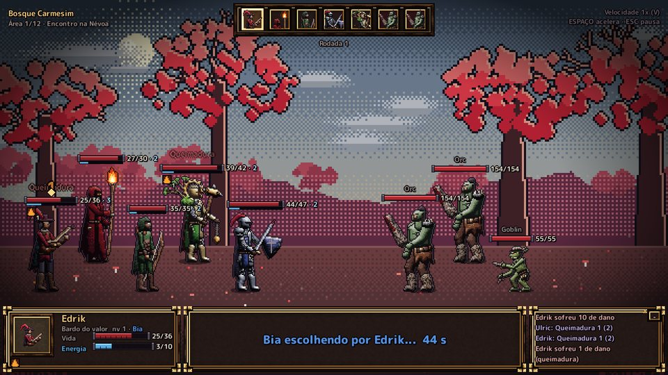
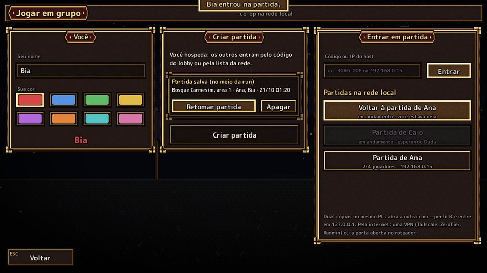

ECOS DA CRIPTA
Como instalar e jogar com os amigos · versão {{VERSAO}}
Resumo rápido
- Instale o jogo com o Instalar Ecos da Cripta {{VERSAO}}.exe (dois cliques, Instalar, Concluir).
- Estão em casas diferentes? Todos instalam a Radmin VPN e entram na mesma rede dela.
- Quem hospeda: Jogar em grupo → Criar partida → manda o código que aparece.
- Os outros: Jogar em grupo → digitam o código → Entrar.
- Cada um escolhe os seus heróis, todos marcam Pronto! e quem hospeda clica Iniciar.
1. O que você precisa
- Windows 10 ou 11 (64 bits) e uns 300 MB livres. Não precisa instalar Python nem mais nada.
- Todos com a mesma versão do jogo (o mesmo instalador). Com versões diferentes o jogo avisa e não deixa entrar.
- De 2 a 4 jogadores, com até 5 heróis no total no grupo.
- Para jogar de casas diferentes: a Radmin VPN (grátis), explicada no passo 4.
2. Instalar o jogo
- Dê dois cliques em Instalar Ecos da Cripta {{VERSAO}}.exe.
- Se aparecer "O Windows protegeu o computador": clique em Mais informações e depois em Executar assim mesmo. Isso aparece porque o jogo não tem uma assinatura digital paga; acontece só na primeira vez.
- Deixe marcado "Criar um atalho na área de trabalho" e clique em Instalar.
- Clique em Concluir: o jogo abre.
O jogo fica em %LOCALAPPDATA%\Programs\Ecos da Cripta e não pede senha de administrador. O seu
progresso (Brasas, conquistas, skins) fica em %APPDATA%\Ecos da Cripta e não se perde ao
reinstalar ou atualizar.
Se o antivírus reclamar do instalador ou do jogo, é um falso alarme comum com jogos feitos em Python. Escolha "Permitir" ou "Restaurar" e, se precisar, adicione a pasta do jogo às exceções do antivírus.

3. Jogar junto na mesma casa (mesmo Wi-Fi)
- Quem vai hospedar (de preferência o PC mais forte, que vai ficar ligado a partida toda): no título, Jogar em grupo, escreva o seu nome, escolha uma cor e clique em Criar partida.
- Na primeira vez o jogo explica o aviso do firewall: clique em Entendi. Logo depois o Windows pergunta se o Ecos da Cripta pode usar a rede: marque Redes privadas e clique em Permitir acesso.
- Os outros: Jogar em grupo, nome e cor. A partida aparece sozinha em "Partidas na rede local": é só clicar nela. Se não aparecer, digite o código que o host vê e clique em Entrar.

4. Jogar junto pela internet (Radmin VPN)
A Radmin VPN coloca todo mundo numa "rede de casa" virtual, como se estivessem no mesmo Wi-Fi. É grátis e leva uns 5 minutos para configurar uma vez.
4.1. Todos: instalar a Radmin VPN
- Entre no site oficial radmin-vpn.com/br, baixe e instale.
- Abra a Radmin VPN e deixe ela ligada enquanto jogam.
4.2. Quem hospeda: criar a rede
- Na Radmin VPN, clique em Criar rede (em inglês: Create network).
- Escolha um nome da rede e uma senha e clique em Criar.
- Mande o nome e a senha para os amigos (WhatsApp, Discord...).
4.3. Os outros: entrar na rede
- Na Radmin VPN, clique em Entrar em rede (em inglês: Join network).
- Digite o nome da rede e a senha e clique em Entrar.
- Pronto: a rede e as pessoas dela aparecem na janela da Radmin VPN.
4.4. No jogo
- Quem hospeda: Jogar em grupo → Criar partida. Na primeira vez, o aviso do firewall: Entendi e, quando o Windows perguntar, marque Redes privadas e Redes públicas (a rede da Radmin costuma aparecer como pública) e clique em Permitir acesso.
- No acampamento do grupo, o código da partida aparece à esquerda. Em cima dele está escrito de que rede ele é: precisa dizer "Radmin VPN". Se disser "rede local", clique na linha do IP (trocar de rede) até aparecer "Radmin VPN".
- Mande esse código para os amigos (ex.:
0D8R-5G7). - Os outros: Jogar em grupo, digitem o código em "Código ou IP do host" e cliquem em Entrar. Às vezes a partida também aparece na lista.


Sem a Radmin, também dá para o host abrir a porta 47800 (TCP) no roteador e passar o IP da internet dele. Mas a Radmin é bem mais fácil.
5. No acampamento do grupo
- Os heróis de todo mundo sentam em volta da fogueira, com o nome do dono em cima, na cor dele.
- Ajustar meus heróis abre a Capitã: escolha as classes e quantos heróis você leva. O grupo inteiro tem no máximo 5 heróis (ex.: 2 jogadores = 3 + 2; 4 jogadores = 2 + 1 + 1 + 1).
- Os outros personagens do acampamento funcionam como no jogo sozinho (talentos, raça, skins, bênçãos...).
- Converse pela Conversa (Enter abre e manda) ou mande um emote. Os dois painéis minimizam no ▲.
- Quando estiver pronto, clique em Pronto!. Quando todos estiverem prontos, quem hospeda clica em Iniciar.
6. Durante a partida
- Mapa e eventos são votados: clique na carta que você quer. Cada carta mostra quem votou nela. Empate é sorteado; depois de 40 segundos vale o que foi votado.
- No combate, cada um joga com os seus heróis. Na vez de um herói de outra pessoa aparece "Fulano escolhendo...". Quem demorar mais de 45 segundos tem a vez jogada pela IA.
- Nas recompensas, na loja e nos serviços, o grupo segue quando todos clicarem em continuar.
- Cada um tem o seu ouro e a sua mochila (50 espaços). O baú da equipe é de todos: guarde lá o que serve para outro jogador. Na loja e no menu do mapa dá para enviar ouro a alguém.
- No inventário, a seta verde e o rostinho em cada peça mostram para qual herói (de qualquer jogador) ela é melhor.
- No fim da run, cada um guarda no próprio progresso as Brasas, as conquistas e as suas peças, e o grupo volta ao acampamento para jogar de novo.


7. Se alguém cair ou fechar o jogo
- A internet caiu: o jogo tenta voltar sozinho por até 90 segundos. Enquanto isso, a IA joga com os seus heróis.
- Fechou o jogo (ou o PC travou): abra de novo → Jogar em grupo → clique em "Voltar à partida de ..." na lista ou digite o mesmo código. Você volta exatamente onde o grupo está, até no meio de uma luta.
- Quem hospedou fechou o jogo: a partida fica salva no PC dele. Quando ele abrir Jogar em grupo → Retomar partida, todos entram de novo pelo código e a run continua de onde parou.

8. Problemas comuns
"Ninguém respondeu" ou "Não há partida aberta"
- Quem hospeda já clicou em Criar partida e está no acampamento do grupo?
- O código está certo? (O jogo entende O no lugar de 0 e I no lugar de 1.)
- Pela internet: todos estão na mesma rede da Radmin VPN, com ela ligada? E o código mostra "Radmin VPN"?
- O firewall de quem hospeda pode estar bloqueando: veja o próximo item.
Liberar o jogo no firewall (se você clicou em "Cancelar" sem querer)
- Abra Segurança do Windows → Firewall e proteção de rede → Permitir um aplicativo pelo firewall.
- Clique em Alterar configurações.
- Ache Ecos da Cripta na lista e marque Privada e Pública. Se ele não estiver na lista,
Permitir outro aplicativo... → procure o
Ecos da Cripta.exena pasta do jogo. - OK. Um antivírus com firewall próprio (Avast, Kaspersky, Norton...) também precisa deixar o jogo e a Radmin VPN passarem.
"Versões diferentes" ou "os dados do jogo são diferentes"
Alguém está com outra versão. Todos instalam o mesmo instalador (ele atualiza por cima, sem perder o progresso).
A partida está lenta ou aparece "Conexão lenta"
- Quem hospeda deve ser quem tem a melhor internet (de preferência no cabo, não no Wi-Fi).
- Feche downloads e streams pesados durante o jogo.
- Na Radmin VPN, quando a ligação direta não dá certo ela passa por um servidor do meio, que é mais lento.
O jogo fechou sozinho
O motivo fica no arquivo erros.txt em %APPDATA%\Ecos da Cripta (cole esse caminho na
barra do Explorador de Arquivos). Mande esse arquivo para quem passou o jogo para você.
A tela está pequena ou cortada
F11 ou Alt+Enter alternam a tela cheia.
9. Teclas
| Tecla | O que faz |
|---|---|
| Mouse | Quase tudo: clicar, arrastar itens, botão direito nos itens para mais opções |
| Esc | Voltar / menu |
| F11 ou Alt+Enter | Tela cheia |
| G · I · B · F | No mapa: Grupo · Inventário · Baú · Fabricação |
| Enter ou T | No acampamento do grupo: abrir a conversa |
| Shift+clique | No inventário: leva a pilha inteira para o outro lado (mochila ↔ baú) |
As teclas podem ser trocadas em Opções, na tela de título.
10. Atualizar e desinstalar
- Versão nova: rode o instalador novo por cima. O progresso continua.
- Desinstalar: Configurações → Aplicativos → Ecos da Cripta → Desinstalar. O progresso fica guardado
em
%APPDATA%\Ecos da Cripta(apague essa pasta só se quiser começar do zero).